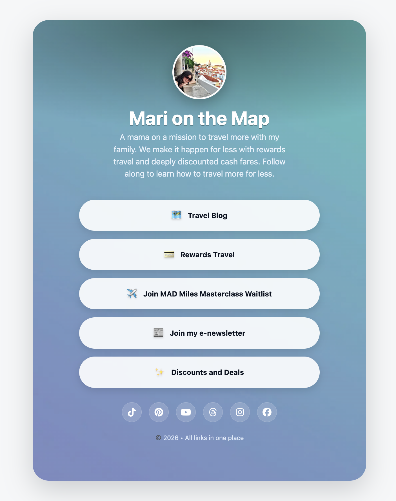
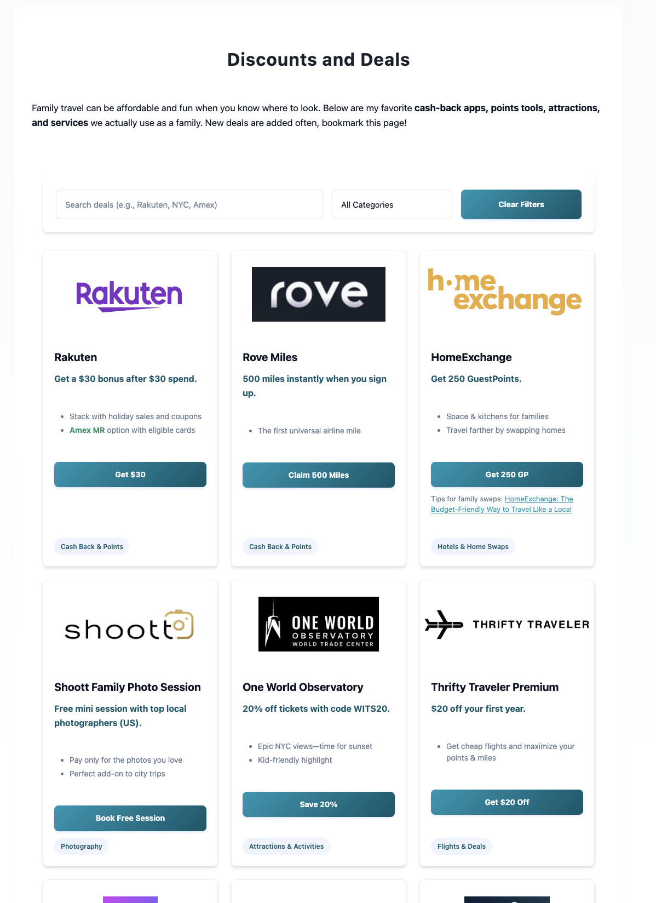

Caso de estudio · WordPress · Travel blog
No necesitas Linktree si tienes WordPress: lo que construimos para una travel blogger
Cuando Mari, una blogger de viajes en familia con más de 28.000 seguidores en Instagram, nos escribió, tenía un problema concreto: necesitaba una página de "link in bio" para centralizar sus links desde redes sociales, pero no quería usar Linktree ni Beacons.
La razón era simple: cada click que salía de su sitio era tráfico que no volvía. Pageviews perdidas. Autoridad de dominio regalada a una plataforma de terceros. Y con un sitio de viajes que vive de visitas orgánicas y afiliados, eso tiene un costo real.
Entonces nos pidió algo específico: que se viera como Linktree, pero que viviera adentro de su WordPress.
El problema con las páginas de link in bio de terceros
Linktree, Beacons, Later Link in Bio y similares resuelven un problema visual, pero crean otro: te sacan del ecosistema de tu propio sitio.
Cuando alguien hace click en tu link de Instagram y aterriza en
linktr.ee/tuusuario, eso le da autoridad a Linktree, no a vos. No acumula tiempo en tu
sitio. No cuenta como sesión en tu Analytics. No indexa tu dominio.
Para una persona con un sitio nuevo o pequeño, quizás no importa tanto. Pero para alguien que ya tiene años de contenido, SEO construido y una audiencia fiel, es una fuga innecesaria.
Lo que construimos: una página /links dentro de su WordPress
La solución fue crear una página personalizada dentro de su propio WordPress, accesible en marionthemap.com/links/, diseñada visualmente para que se comportara exactamente como una página de Linktree o Beacons, pero con todas las ventajas de estar en su propio dominio.

/links/ dentro del propio
WordPress, con look de Linktree pero sin perder tráfico al dominio
de terceros.
Qué incluye la página
- Avatar circular con foto de perfil y nombre.
- Bio corta, pensada para contexto rápido desde redes.
- Botones grandes y clicables, uno por destino o recurso clave.
- Diseño limpio, centrado, mobile-first (donde está el ~90% del tráfico social).
- URL rastreable con UTMs para distinguir el tráfico que viene de cada red.
El link en su perfil de Instagram apunta a:
marionthemap.com/links/Así puede ver en Google Analytics exactamente cuánto tráfico genera cada red, sin perder ni una sesión.
Lo más importante: todo el tráfico se queda en su sitio. No hay plataforma intermediaria. Cada click suma tiempo en sesión, reduce el bounce rate atribuible a redes y contribuye a la autoridad del dominio.
El segundo proyecto: una página de descuentos y deals con filtros
El segundo pedido fue más ambicioso: Mari recopila activamente descuentos, herramientas, apps y servicios que recomienda a su audiencia de viajes familiares. Antes los tenía dispersos en posts o en una página estática sin estructura.
Lo que necesitaba era una página que funcionara como directorio: filtrable, visual y fácil de mantener.
Construimos marionthemap.com/deals/ con las siguientes funcionalidades:

/deals/ con filtros por
categoría, búsqueda libre y cards visuales por cada deal.
Filtros por categoría
Cash Back & Points, Flights & Deals, Hotels & Home Swaps, Attractions & Activities, Photography, Tools & Apps, Credit Cards, Shopping y Coupons. Con un click, la audiencia ve solo lo que le interesa.
Búsqueda libre
Un campo de búsqueda en tiempo real para encontrar cualquier producto o servicio por nombre.
Cards visuales por deal
Logo del servicio, título, descripción del beneficio, puntos clave en lista, CTA con link de afiliado y categoría como etiqueta.
Fácil de actualizar
Mari puede agregar nuevas deals sin tocar código. Toda la gestión vive en el backend de WordPress.
Por qué esto importa para sitios basados en afiliados
Si tu modelo de negocio incluye links de afiliados, tener una página centralizada y actualizada es un activo. Es el lugar al que podés mandar a tu audiencia cuando alguien te pregunta "¿qué apps usás?" o "¿dónde encuentro ese descuento?".
Una página de deals bien diseñada:
- Concentra los clicks de afiliados en un solo lugar rastreable.
- Puede posicionarse orgánicamente para búsquedas tipo "descuentos viajes familia".
- Da credibilidad y estructura a las recomendaciones.
- Funciona como página evergreen que crece con el tiempo.
En el caso de Mari, la página está indexada, tiene su propio meta description y sigue sumando deals. Es un activo que se construye solo mientras ella sigue trabajando su contenido.
Lo que esto dice sobre cómo pensamos el trabajo en Udalia
Ninguna de estas dos páginas era un template descargado ni un plugin instalado con configuración por defecto.
El brief inicial era: "quiero algo como Linktree pero que no me saque del sitio." Y el resultado fue una solución construida a medida, integrada en su infraestructura existente, con decisiones de diseño pensadas para su audiencia y su modelo de negocio.
Eso es lo que hacemos: entender el problema real detrás del pedido, y construir lo que lo resuelve de verdad.
Tu sitio puede hacer más de lo que hace hoy.
Si tu sitio existe pero no está trabajando para tu negocio, eso tiene solución. En Udalia construimos el mensaje, la presencia y los sistemas para que tu marca sea encontrada y elegida. Sin herramientas genéricas: con lo que tu negocio necesita, construido a medida.